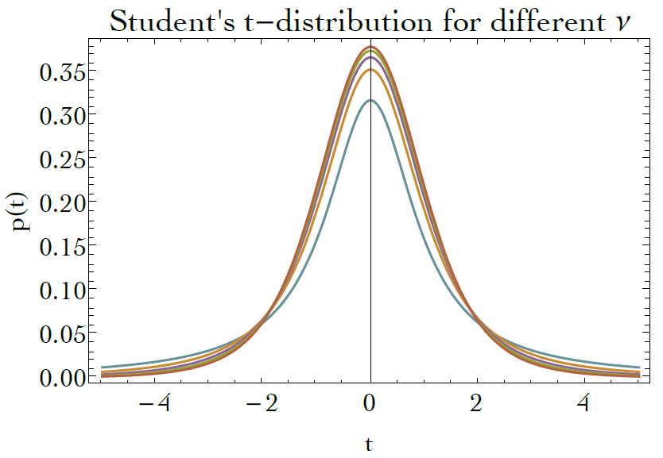
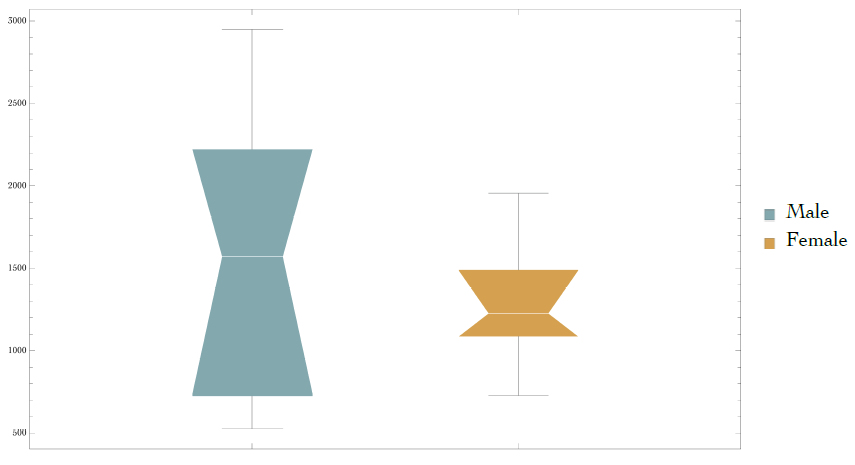

[123942 169083 323792 22083 41249 64931 55466 56451 144312 102898][ 59259 35450 59198 25502 101991 21861 38046 144860 50278 58872]If two samples are drawn from the same population, what's the chance of finding a difference this large and larger?
$\rightarrow$ The chance here is quantified by a p-value!
If two samples are drawn from the same population, what's the chance of finding a difference this large and larger?
The Null Hypothesis we want to test is that the means, or medians, are equal, assuming that the groups, A & B, were sampled from the same underlying population.
We write that as: $p(x) = p_A(x) = p_B(x)$.
This implies that that all the true statistics are assumed equal. For example: $\{\bar{x}_A=\bar{x}_B\}\, \&\, \{\tilde{x}_A=\tilde{x}_B\}\, \&\, \{MAD_A = MAD_B\}\, ...$
Formally, we write the Null hypothesis as: name: hypothesis | assumptions. So: $$H_0: \tilde{x}_A = \tilde{x}_B\, |\, p_{A}(x) = p_{B}(x)$$
Pseudo-Code
# Compute the difference of the observed statistic
DeltaX = median(Xa) - median(Xb)
# Combine data as "best guess" at underlying population
Xab = [Xa, Xb];
loop 10,000 times:
# get 2 new groups from pool
Xa_simulation = random choice of Xab, size=len(Xa), replace = True
Xb_simulation = random choice of Xab, size=len(Xb), replace = True
# compute statistic on each
thetaXa_simulation = median(Xa_simulation) #or mean, var, cor, etc.
thetaXb_simulation = median(Xb_simulation) #or mean, var, cor, etc.
# Compute the difference of the simulated statistic
DeltaX_simulation = thetaXa' - thetaXb'
Test: if our observed difference, $\Delta_{\theta}$, is more extreme than some critical threashold, $\Delta_{crit\pm}$, then we can reject the null hypothesis that the medians are equal.
The homework has you performing a slightly different procedure for constructing the Null Hypothesis than we have discussed. The homework is using a method called Permutation, which is a type of randomization like the bootstrap, but actually tests something a little different...
Think about what the Null distribution represents, which of the two might better represent "coming from the same underlying distribution"?
The question is:
Is our observed statistic inside or outside of the critical interval?
Do we accept or reject the Null hypothesis? By how much?
What we've done is the bootstrap equivalent of Student's T-Test
Which tests the difference between means of two groups, evaluating the null hypothesis that both samples were from the same underlying distribution:$$H_0: \bar{x}_A=\bar{x}_B | N(\mu_A, \sigma_A^2) = N(\mu_B, \sigma_B^2)$$
So it assumes A and B have the same "true variance". Thus it is called the equal variance t-test.
Similar to our $\Delta$ statistic, here it is called the $t$ statistic, which has a "standardized" form, i.e. unitless.
In general, it looks like: $$t=\sqrt{n}\left( \frac{\bar{x}_A - \bar{x}_B}{\hat{\sigma}_{AB}}\right)$$
Where $\hat{\sigma}_{AB}$ is the "pooled" standard deviation by combining two Gaussian distributions into a big box.
What about if you had different $N$ in each group?
Under our "10,000" friends approach, the $t-statistic$ follow a theoretical $t-distribution$: $$p(t|\nu) = \frac{\Gamma\left( \frac{\nu+1}{2}\right)}{\sqrt{\nu\pi}\Gamma(\frac{\nu}{2})}\left( 1+\frac{t^2}{\nu}\right)^{-\frac{\nu+1}{2}}$$ Where $\nu$ represents the number of "degrees of freedom", which we don't have to worry about with bootstrap.
Are the median metabolic rates different between male and female fulmars?
[1195.5, 843.3, 525.8, 605.7, 2950, 2308.7, 2135.6, 1945.6][1956.1, 1490.5, 1361.3, 1086.5, 1091, 727.7]Are these medians different? Is $\Delta$ significant statistically? Biologically?
If spread and skew are not the same between groups, assume two different populations.
The exact question here is:
If only the medians of the two different populations were equal, what is the chance of seeing a difference as big and bigger than observed?
If only the medians of the two different populations were equal, what is the chance of seeing a difference as big and bigger than observed?
The Null Hypothesis we want to test is that the medians are equal, assuming that the groups, A & B, were sampled from different underlying population.
Thus: $p_A(x) \neq p_B(x)$.
Specifically, we are testing:$$H_0: \tilde{x}_A = \tilde{x}_B\, |\, p_{A}(x) \neq p_{B}(x)$$
We simulate this by first setting the medians equal to each other, i.e. centering the data.$$X_A\leftarrow x_A - \tilde{x}_A\\~X_B\leftarrow x_B - \tilde{x}_B\\~\text{Thus,} median(X_A) = median(X_B) = 0$$
Then we resample from each recentered data with replacement and compute our statistic, $\theta^*$ for each new group and compute our $\Delta^*$ statistic (differences).